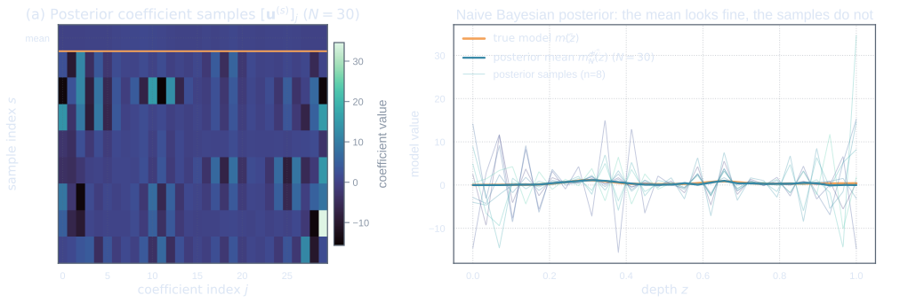
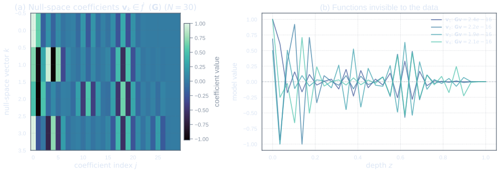
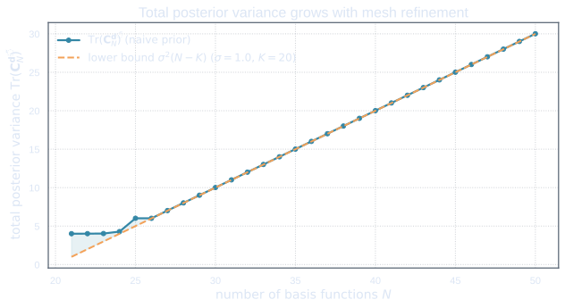

Sampling the Naive Posterior
Why the mean is not the whole posterior
In the previous act, the posterior mean looked respectable. It passed the first visual test: it had the right broad shape, it responded to the data, and it did not immediately look like numerical wreckage.
But a Bayesian inverse problem does not produce only a mean. It produces a probability measure. The mean is only one summary of that measure, and a dangerous summary when viewed alone. A posterior mean can look calm while the posterior distribution around it is thrashing like a stormy sea.
A posterior is a probability measure
The finite-dimensional posterior obtained in the naive discretization is \[ \mathbf{u}\mid \obs \sim \N(\tilde{\mathbf{u}}_N^{\obs},\mathbf{C}_N^{\obs}). \] This is a probability measure on \(\R^N\). Once we reconstruct functions using the hat basis, it also induces a probability measure on the finite element space \[ \M_N = \operatorname{span}\{\phi_1,\ldots,\phi_N\}. \]
That is, a random coefficient vector \[ \mathbf{u} = \begin{pmatrix} [\mathbf{u}]_1 \\ \vdots \\ [\mathbf{u}]_N \end{pmatrix} \] produces a random function \[ m_N(x) = \sum_{j=1}^N [\mathbf{u}]_j\phi_j(x). \]
The posterior mean is the function \[ \tilde{m}_N^{\obs}(x) = \sum_{j=1}^N [\tilde{\mathbf{u}}_N^{\obs}]_j\phi_j(x). \] But the posterior itself consists of all possible functions generated by sampling \[ \mathbf{u} \sim \N(\tilde{\mathbf{u}}_N^{\obs},\mathbf{C}_N^{\obs}). \]
The posterior mean asks: "Where is the centre of the cloud?" The posterior measure asks: "What is the whole cloud doing?"
Uncertainty lives in the samples
To understand whether the posterior is sensible, we must inspect more than the mean. We must ask what typical posterior samples look like.
A sample from the posterior is a possible model compatible with three things:
- the observed data;
- the assumed noise model;
- the assumed prior.
If the samples look physically plausible, then the posterior uncertainty may be telling a coherent story. If the samples fluctuate wildly, then something is wrong, even if the mean still looks acceptable.
This distinction is essential. A mean can smooth away pathologies. Samples do not. Samples are less polite. They show the posterior with its socks off.
How to sample a finite-dimensional Gaussian
The mathematical recipe
Let \[ \mathbf{u} \sim \N(\bar{\mathbf{u}},\mathbf{C}), \] where \[ \bar{\mathbf{u}} \in \R^N, \qquad \mathbf{C} \in \R^{N\times N}. \] Assume first that \(\mathbf{C}\) is symmetric positive definite. Then we may factorize \[ \mathbf{C} = L\mathbf{L}^{\top}, \] for example using a Cholesky factorization. Now draw \[ \boldsymbol{\xi} \sim \N(0,\mathbf{I}_N), \] and set \[ \mathbf{u} = \bar{\mathbf{u}} + \mathbf{L}\boldsymbol{\xi}. \]
This gives the desired distribution. Indeed, \[ \E[\mathbf{u}] = \E[\bar{\mathbf{u}} + \mathbf{L}\boldsymbol{\xi}] = \bar{\mathbf{u}} + \mathbf{L}\E[\boldsymbol{\xi}] = \bar{\mathbf{u}}, \] and \[ \Cov(\mathbf{u}) = \Cov(\mathbf{L}\boldsymbol{\xi}) = \mathbf{L}\Cov(\boldsymbol{\xi})\mathbf{L}^{\top} = \mathbf{L} \mathbf{I}_N \mathbf{L}^{\top} = \mathbf{C}. \]
If \(\mathbf{C}\) is positive semidefinite rather than positive definite, we may use an eigenvalue decomposition \[ \mathbf{C} = \mathbf{Q}\boldsymbol{\Lambda}\mathbf{Q}^{\top}, \] where \[ \boldsymbol{\Lambda} = \operatorname{diag}(\lambda_1,\ldots,\lambda_N), \qquad \lambda_j \geq 0. \] Then a covariance square-root is \[ \mathbf{C}^{1/2} = \mathbf{Q}\boldsymbol{\Lambda}^{1/2}\mathbf{Q}^{\top}, \] and we may sample using \[ \mathbf{u} = \bar{\mathbf{u}} + \mathbf{C}^{1/2}\boldsymbol{\xi}. \]
The practical recipe
For the naive posterior, the sampling procedure is as follows.
- Compute the posterior mean \(\tilde{\mathbf{u}}_N^{\obs}\).
- Compute the posterior covariance \(\mathbf{C}_N^{\obs}\).
- Factorize \(\mathbf{C}_N^{\obs}\), for example by Cholesky or by an eigenvalue decomposition.
- Draw independent standard normal vectors \[ \boldsymbol{\xi}^{(s)} \sim \N(0,\mathbf{I}_N), \qquad s=1,\ldots,S. \]
- Form coefficient samples \[ \mathbf{u}^{(s)} = \tilde{\mathbf{u}}_N^{\obs} + \mathbf{L}\boldsymbol{\xi}^{(s)}. \]
- Reconstruct sample functions using the hat basis: \[ m_N^{(s)}(x) = \sum_{j=1}^N [\mathbf{u}^{(s)}]_j\phi_j(x). \]
Here \(S\) is the number of posterior samples we want to inspect.
In exact arithmetic, the posterior covariance is symmetric positive semidefinite. In floating-point arithmetic, tiny negative eigenvalues may appear because of round-off error. A practical implementation often symmetrizes the matrix, \[ \mathbf{C}_N^{\obs} \leftarrow \tfrac{1}{2}(\mathbf{C}_N^{\obs} + (\mathbf{C}_N^{\obs})^{\top}), \] and discards eigenvalues that are negative only up to numerical precision.
What the samples reveal
The samples fluctuate wildly
After drawing posterior samples, we reconstruct the corresponding functions \[ m_N^{(s)}(x) = \sum_{j=1}^N [\mathbf{u}^{(s)}]_j\phi_j(x). \] Now the problem begins to show itself.
The posterior mean may track the main features of the true model, but the samples can vary dramatically around it. They may contain rapid oscillations, large local deviations, or high-frequency behaviour that the data never justified.
The plot now tells a different story. The mean says: \[ \text{"Everything is fine."} \] The samples say: \[ \text{"We have been ignoring the basement."} \]

The data are too few
The reason is structural. The data vector has only \(K\) entries: \[ \obs \in \R^K. \] The coefficient vector has \(N\) entries: \[ \mathbf{u} \in \R^N. \] If \(N > K\), then there are more unknown coefficients than observations.
The forward matrix \[ \Gb \in \R^{K\times N} \] can have rank at most \(K\): \[ \operatorname{rank}(\Gb) \leq K. \] Therefore, if \(N>K\), the nullspace of \(\Gb\) has dimension at least \[ \dim \operatorname{null}(\Gb) = N-\operatorname{rank}(\Gb) \geq N-K. \]
Every vector \(\mathbf{v} \in \operatorname{null}(\Gb)\) satisfies \[ \Gb\mathbf{v} = 0. \] So moving in the direction \(\mathbf{v}\) does not change the predicted data.
The number of basis functions is too large
Increasing the number of basis functions increases the number of unknowns. But unless the number of observations increases in a compatible way, it also increases the number of directions that the data cannot see.
This is not automatically a problem. Infinite-dimensional inverse problems always contain directions that are weakly observed or unobserved. The real question is: what controls those directions?
In a coherent Bayesian formulation, the prior controls them in a way that is consistent with a probability measure on a function space. In the naive formulation, the prior is merely \[ \mathbf{C}_N = \sigma^2 \mathbf{I}_N. \] So every new coefficient receives a fresh independent amount of variance \(\sigma^2\).
The mesh is refined. More basis functions appear. More independent prior wiggles are introduced. The data cannot see most of them. The posterior inherits them.
The problem is not simply that \(N>K\). The problem is that the unseen directions are filled with variance that has not been designed to have a meaningful continuous limit.
The underdetermined system
More unknown coefficients than observations
In the naive discretized problem, \[ \obs = \Gb\mathbf{u} + \noise, \] the matrix \(\Gb\) maps from \(\R^N\) to \(\R^K\). When \(N>K\), the system is underdetermined. There are more coefficient directions than data directions.
The likelihood can constrain only directions that influence the data. These are directions in the row space of \(\Gb\). Directions in the nullspace of \(\Gb\) are invisible to the likelihood.
If \(\mathbf{v} \in \operatorname{null}(\Gb)\), then \[ \Gb(\mathbf{u}+\alpha \mathbf{v}) = \Gb\mathbf{u} + \alpha \Gb\mathbf{v} = \Gb\mathbf{u} \] for every scalar \(\alpha \in \R\).
Thus, all coefficient vectors along the affine line \[ \mathbf{u} + \alpha\mathbf{v}, \qquad \alpha \in \R, \] produce exactly the same noiseless data prediction.

Invisible directions
Let \[ \mathcal{N}(\Gb) = \{\mathbf{v}\in\R^N : \Gb\mathbf{v}=0\} \] denote the nullspace of \(\Gb\).
For any \(\mathbf{v}\in \mathcal{N}(\Gb)\), the data contain no information about the component of \(\mathbf{u}\) in the direction \(\mathbf{v}\). Therefore, the posterior variance in that direction is controlled entirely by the prior.
To see this clearly, consider the naive prior \[ \mathbf{C}_N = \sigma^2 \mathbf{I}_N. \] The posterior covariance is \[ \mathbf{C}_N^{\obs} = \sigma^2 \mathbf{I}_N - \sigma^4 \Gb^{\T} \left( \sigma^2 \Gb\Gb^{\T} + \Cd \right)^{-1} \Gb. \] If \(\mathbf{v}\in\mathcal{N}(\Gb)\), then \(\Gb\mathbf{v}=0\), and hence \[ \mathbf{C}_N^{\obs}\mathbf{v} = \sigma^2 \mathbf{v}. \] So every nullspace direction remains a posterior covariance eigenvector with eigenvalue \(\sigma^2\).
In words: the data remove none of the prior variance in directions they cannot see.
Directions unconstrained by the data
Let \(r_N = \operatorname{rank}(\Gb)\). Then \(r_N \leq K\). The nullspace has dimension \(N-r_N\). On this nullspace, the posterior covariance keeps the value \(\sigma^2\) in each orthonormal direction.
Therefore, at least \(N-K\) directions retain posterior variance \(\sigma^2\).
This is the first precise sign that something is wrong. Refining the mesh adds new directions. The data cannot constrain them. The naive prior gives them all the same amount of variance. The posterior uncertainty grows a tail made of unseen degrees of freedom.
The data illuminate only a finite number of directions. The remaining directions sit in the dark, and the naive prior lets them grow teeth.
The Divergence of the Naive Posterior
The quantity we should monitor
Expected posterior energy
One diagnostic is the expected squared size of a posterior sample: \[ \E_{\post_N}\norm{m_N}^2. \] If the posterior mean is not zero, then this decomposes into \[ \E_{\post_N}\norm{m_N}^2 = \norm{\tilde{m}_N^{\obs}}^2 + \E_{\post_N}\norm{m_N-\tilde{m}_N^{\obs}}^2. \] The first term measures the size of the posterior mean. The second term measures the posterior spread.
In coefficient space, with the Euclidean norm, this becomes \[ \E_{\post_N}\norm{\mathbf{u}}_2^2 = \norm{\tilde{\mathbf{u}}_N^{\obs}}_2^2 + \Tr(\mathbf{C}_N^{\obs}). \]
Thus, the trace of the posterior covariance measures the total posterior variance in coefficient space.
Pointwise variance
Another diagnostic is the pointwise posterior variance: \[ \operatorname{Var}_{\post_N}(m_N(x)). \] Since \[ m_N(x) = \sum_{j=1}^N [\mathbf{u}]_j\phi_j(x), \] we may define the vector of basis functions evaluated at \(x\): \[ \boldsymbol{\phi}(x) = \begin{pmatrix} \phi_1(x) \\ \vdots \\ \phi_N(x) \end{pmatrix}. \] Then \[ m_N(x) = \boldsymbol{\phi}(x)^{\top}\mathbf{u}. \] Therefore, \[ \operatorname{Var}_{\post_N}(m_N(x)) = \boldsymbol{\phi}(x)^{\top} \mathbf{C}_N^{\obs} \boldsymbol{\phi}(x). \]
This tells us how uncertain the posterior is at each point \(x\).
Integrated variance
We can also integrate the pointwise variance over the physical domain: \[ \int_{\Omega} \operatorname{Var}_{\post_N}(m_N(x))\,dx. \] Using the expression above, \[ \int_{\Omega} \operatorname{Var}_{\post_N}(m_N(x))\,dx = \int_{\Omega} \boldsymbol{\phi}(x)^{\top} \mathbf{C}_N^{\obs} \boldsymbol{\phi}(x)\,dx. \] This can be written as \[ \Tr(\Mb \mathbf{C}_N^{\obs}), \] where \[ [\Mb]_{ij} = \int_{\Omega}\phi_i(x)\phi_j(x)\,dx \] is the finite element mass matrix.
The coefficient-space trace \(\Tr(\mathbf{C}_N^{\obs})\) and the function-space quantity \(\Tr(\Mb \mathbf{C}_N^{\obs})\) are not the same object. This distinction is one of the clues that geometry matters. For the moment, however, we follow the naive workflow on its own terms and inspect the coefficient-space posterior it has created.
What happens as the mesh is refined
Increasing the number of basis functions
Mesh refinement means that we increase the number of basis functions: \[ N \to \infty. \] The finite-dimensional spaces \[ \M_N = \operatorname{span}\{\phi_1,\ldots,\phi_N\} \] become richer. They can represent finer and finer variations in the model.
This sounds like progress. In a well-designed numerical method, increasing \(N\) should improve the approximation of a fixed continuous problem.
But here we did not begin with a fixed continuous prior measure. We began with the sequence of finite-dimensional priors \[ \mathbf{u}_N \sim \N(0,\sigma^2 \mathbf{I}_N). \] Each time \(N\) changes, we have a new Gaussian distribution on a new coordinate space. We have not shown that these distributions approximate any probability measure on functions.
The expected variance grows
For the naive prior, \(\mathbf{C}_N = \sigma^2 \mathbf{I}_N\). The posterior covariance is \[ \mathbf{C}_N^{\obs} = \sigma^2 \mathbf{I}_N - \sigma^4 \Gb^{\T} \left( \sigma^2 \Gb\Gb^{\T} + \Cd \right)^{-1} \Gb. \]
The data can reduce variance only in directions that affect the data. Since \(\operatorname{rank}(\Gb) \leq K\), there are at least \(N-K\) directions that the data cannot constrain. In each of these directions, the posterior variance remains exactly \(\sigma^2\).
Consequently, \[ \Tr(\mathbf{C}_N^{\obs}) \geq \sigma^2 (N-K). \] As \(N\) increases while \(K\) is fixed, \[ \Tr(\mathbf{C}_N^{\obs}) \to \infty. \]
This means that the total posterior variance in coefficient space grows without bound.

The posterior does not converge to a sensible limit
If the posterior covariance grows in total variance as the mesh is refined, then the sequence of posteriors is not settling down to a meaningful limiting posterior. Instead of approximating a fixed probability measure on functions, we are generating a sequence of increasingly large finite-dimensional probability clouds.
The data may continue to control a small number of visible directions. But the number of invisible directions keeps increasing, and the naive prior keeps feeding each of them the same variance.
The posterior mean may still look acceptable because it lies mostly in the directions informed by the data. The posterior samples reveal the full story: there is too much uncertainty in directions that were introduced by the discretization rather than by a coherent continuous model.
Refinement should reveal the limit of the problem. Here, refinement reveals that the problem was never properly posed.
A mathematical diagnosis
The covariance trace
For a centred Gaussian vector \[ \mathbf{u} \sim \N(0,\mathbf{C}_N), \] the expected squared Euclidean norm is \[ \E\norm{\mathbf{u}}_2^2 = \Tr(\mathbf{C}_N). \] Indeed, \[ \E\norm{\mathbf{u}}_2^2 = \E[\mathbf{u}^{\top}\mathbf{u}] = \E[\Tr(\mathbf{u}\mathbf{u}^{\top})] = \Tr(\E[\mathbf{u}\mathbf{u}^{\top}]) = \Tr(\mathbf{C}_N). \]
For a non-centred Gaussian \[ \mathbf{u} \sim \N(\bar{\mathbf{u}},\mathbf{C}_N), \] we have \[ \E\norm{\mathbf{u}}_2^2 = \norm{\bar{\mathbf{u}}}_2^2 + \Tr(\mathbf{C}_N). \]
Thus, the trace measures the total variance of the Gaussian cloud.
Why \(\mathbf{C}_N = \sigma^2 \mathbf{I}_N\) is dangerous
For the naive coefficient prior, \(\mathbf{C}_N = \sigma^2 \mathbf{I}_N\). Therefore, \[ \Tr(\mathbf{C}_N) = \Tr(\sigma^2 \mathbf{I}_N) = \sigma^2\Tr(\mathbf{I}_N) = \sigma^2 N. \]
So the prior expected coefficient energy is \[ \E\norm{\mathbf{u}}_2^2 = \sigma^2 N. \] As \(N\) grows, this quantity grows linearly.
The posterior improves this only in directions seen by the data. Since the data space has dimension \(K\), the data can remove variance from at most \(K\) independent directions. At least \(N-K\) directions keep their prior variance.
Therefore, \[ \Tr(\mathbf{C}_N^{\obs}) \geq \sigma^2(N-K). \]
The limit is unbounded
Taking the refinement limit, \(N \to \infty\), with \(K\) fixed, we obtain \[ \Tr(\mathbf{C}_N^{\obs}) \to \infty. \] In particular, \[ \E_{\post_N} \norm{\mathbf{u}}_2^2 = \norm{\tilde{\mathbf{u}}_N^{\obs}}_2^2 + \Tr(\mathbf{C}_N^{\obs}) \to \infty, \] provided the posterior mean does not cancel this behaviour in some artificial way. Since the covariance term alone diverges, the posterior spread is already unbounded.
This is the mathematical version of what the samples showed visually.
Let \(\Gb\in\R^{K\times N}\) and let the prior covariance be \(\mathbf{C}_N=\sigma^2 \mathbf{I}_N\), with \(\sigma>0\). Assume the observational noise covariance \(\Cd\) is symmetric positive definite. Then the posterior covariance \[ \mathbf{C}_N^{\obs} = \sigma^2 \mathbf{I}_N - \sigma^4 \Gb^{\T} \left( \sigma^2 \Gb\Gb^{\T} + \Cd \right)^{-1} \Gb \] satisfies \[ \Tr(\mathbf{C}_N^{\obs}) \geq \sigma^2(N-K). \] Hence, if \(K\) is fixed and \(N\to\infty\), then \[ \Tr(\mathbf{C}_N^{\obs})\to\infty. \]
Since \(\operatorname{rank}(\Gb)\leq K\), the nullspace of \(\Gb\) has dimension at least \(N-K\). Let \[ \{\mathbf{v}_1,\ldots,\mathbf{v}_{N-r}\} \] be an orthonormal basis for \(\operatorname{null}(\Gb)\), where \(r=\operatorname{rank}(\Gb)\). For each such vector, \(\Gb\mathbf{v}_j = 0\). Therefore, \[ \mathbf{C}_N^{\obs}\mathbf{v}_j = \sigma^2\mathbf{v}_j. \] Thus \(\mathbf{C}_N^{\obs}\) has at least \(N-r\) eigenvalues equal to \(\sigma^2\). Since \(r\leq K\), it has at least \(N-K\) such eigenvalues. Hence \[ \Tr(\mathbf{C}_N^{\obs}) \geq \sigma^2(N-K). \]
The core mistake
The problem is not that Gaussian priors are bad. The problem is not that finite elements are bad. The problem is not even that the posterior mean was computed incorrectly.
The problem is that we chose the prior after discretization, directly on the coefficient vector, without asking whether the resulting sequence of priors has a meaningful function-space limit.
The prior was not chosen as a probability measure on a function space. It was chosen as a sequence of unrelated finite-dimensional matrices.
A matrix \(\mathbf{C}_N \in \R^{N\times N}\) can be a perfectly valid covariance matrix in \(\R^N\) for every fixed \(N\). But this does not mean that the sequence \(C_1,C_2,C_3,\ldots\) defines a valid covariance operator on a function space.
The continuous question is not merely: \[ \text{Is } \mathbf{C}_N \text{ positive definite for each } N? \] The continuous question is: \[ \text{Do these finite-dimensional distributions approximate a coherent probability measure on functions?} \]
For the naive diagonal prior with fixed variance per coefficient, the answer is no.
What this means philosophically
The discretized problem replaced the original problem
At the beginning, we pretended to have a continuous inverse problem. But we did not fully define it. We did not specify the model space. We did not specify a prior measure on that space. We did not specify the geometry needed to define the correct adjoint.
Instead, we discretized first and formulated the Bayesian problem on the coefficient vector: \[ \mathbf{u} \in \R^N. \] So the actual problem we solved was not the continuous inverse problem. It was a finite-dimensional problem created by the discretization.
The mesh did not approximate the model. The mesh became the model.
Refinement did not improve the approximation
In a healthy numerical method, refinement means that the discrete solution gets closer to the solution of the original problem. But here, refinement changes the probabilistic model itself.
For each \(N\), we choose \[ \mathbf{u}_N \sim \N(0,\sigma^2 \mathbf{I}_N). \] When \(N\) increases, this is not a better approximation of the same prior. It is a different prior on a different space, with more independent random coefficients.
Thus, refinement does not only increase resolution. It also injects additional prior variance.
Refinement changed the problem
The posterior for \(N=10\) and the posterior for \(N=50\) are not merely two approximations of the same infinite-dimensional posterior. Under the naive construction, they are posteriors for two different Bayesian models.
The notation \(\post_N\) should therefore make us nervous. It is not automatically a convergent sequence. It is only a sequence of probability measures produced by a sequence of finite-dimensional choices.
To know whether \(\post_N \to \post\) for some meaningful function-space posterior \(\post\), we must first define \(\post\). That requires choosing the model space, data space, forward map, noise model, and prior measure before discretizing.
A discretization is not innocent. If the continuous problem has not been defined, the discretization becomes the model.
The moral of Act II
The naive posterior did not fail because the algebra was wrong. The algebra was perfectly competent. That is what makes the failure instructive.
The failure came from asking finite-dimensional linear algebra to make infinite-dimensional modelling choices on our behalf.
We started with a function but placed the prior on coefficients. We refined the mesh but did not refine an approximation to a fixed prior measure. We used the posterior mean as evidence of success while ignoring the posterior samples. Once we sampled, the hidden degrees of freedom marched out carrying little banners that read: \[ \text{You forgot the function space.} \]
The next act begins by stepping back from the computation. Before we choose a basis, before we build a matrix, and before we sample anything, we must ask: what is the mathematical problem we are actually trying to solve?